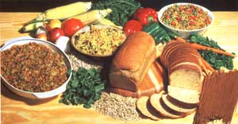

As much as we'd like to see it happen, we're aware that not all of MOTHER'S readers will be able to swing a visit to our Eco-Village research center here in the wooded hills of western North Carolina. And unfortunately, those who can't come will miss the many on-site working presentations of doing-more-with-less knowledge . . . and our daily Show-Hows, which are "live" demonstration classes. These seminars cover a wide variety of subjects, ranging from garden preparation to wood-gas fuel generation, and are taught by staffers whose expertise has been acquired in the tough school of hands-on experience.
So, for those of you who haven't yet been able to make a personal visit, here are a few of the highlights (and only the highlights, since space doesn't permit us to repeat all of the information that's presented in the 90-minute-long classes!) from the "Use of Whole Grains" Show-How . . . with a sidebar detailing MOTHER'S favorite bread recipe, taken from the breadmaking class. It's our hope that this brace of how-to's will whet your appetite for cooking with healthful whole grains and for a visit to the Eco-Village, should you someday find yourself in MOTHER's beautiful neck of the woods.
WHOLESOME WHOLE GRAINS
Let's begin with an assertion: The frequent consumption of a variety of unrefined whole grains, in thoughtful combination with nutritionally complementary foods, will provide you with a source of protein and other nutrients that is more healthful, economical, and interesting than a diet based heavily on meat and refined foods.
Now we're not saying that everyone should give up meat and refined foods completely . . .only that most of us could afford-in more ways than one-to cut down on our consumption of such products and to substantially increase out intake of natural whole grains. Barley, corn, millet, oats, rice, rye, sorghum, and triticale (a high-prorein hybrid of durum wheat and rye), when combined with foods such as beans, nuts, peas, and dairy products that furnish the complementary amino acids needed to form complete protein, provide the health- and economy-conscious gourmet with dishes that are equal or superior in protein content to meat. But then again, protein isn't the whole story: Natural grains offer ample vitamins, minerals, and all-important fiber roughage, as well.
REFINING GOES AGAINST THE GRAIN
As you Riobably know, refined grain-subiquitous in commercially prepared food-sconsist of little more than the starch that's left after the whole grain is processed, with artificial vitamins added to "enrich" the otherwise all-but-impotent product. In refining, you see, the outer hull, or bran, and the endosperm-the two most nutritious, fibrous, and generally beneficial parts of grain-are stripped away in order to produce an even-textured, spoilage-resistant shelf product. Then, to render it attractively white, the flour is bleached.
And, you may ask, just how long has this nutrition-robbing refining been used against the public health? Well, for most folks, refined flour has only been accessible since the industrial revolution, when machinery was developed with which to perform the refining chores economically. Before that-because the grain had to be handprocessed at considerable expense-only the rich and privileged were "blessed" with the pretty white flour that rises so nicely and keeps so well.
On the other hand, for thousands of years the staple foods of humankind have been derived from natural, whole grains. Consequently, a number of healthful dietary combinations of whole grains and their nutritional complements have been developed. For example, Europeans have long enjoyed eating rye bread with cheeses, while Africans mix sorghum or millet with peanuts or beans. In Mexico and the American Southwest, a favorite meal is based on corn tortillas and beans, and the Algonquian natives of the eastern North American woods used the same ingredients-corn and beans-to "invent" succotash. In fact, the staple crops of almost all agrarian Indians of the Americas have always been the "three sisters"-corn, beans, and squash-sometimes with the addition of sunflowers, which were raised for their seeds. And, of course, folks in the Orient are partial to rice, soybeans, and millet.
GETTING THE GRIST OF IT
Finding whole grains shouldn't be difficult, no matter where you live . . . though chances are slim that you'll see them on the shelves of your neighborhood supermarket. Food co-ops, health food stores, and feed-and-grain outlets can all be counted on to carry a variety of them. And if you're really interested in saving money, you might even buy your grains in bulk quantities and grind them yourself. (For most grain-cooking applications that don't require flour, a regular blender is all the "mill" that you'll need.) Whole grains stored in a cool, dry place usually keep for about a year. But as soon as they're refined-ground to make flour, for example-the oils and endosperm are exposed to oxygen, and the processes of decay begin . . . so it's best to grind whole grains only as they're needed.
LET'S GET COOKIN'
So how do you use whole grains? Well, you're certainly not limited to making breads! Remember that-while cooking with whole grains may be a totally new experience for you-humans have been consuming these healthful crunchier longer than any other food except, perhaps, meat (and even that's debatable). Cookbooks abound with taste-tempting recipes employing natural grist, and once you master the basics, you'll find hundreds of ways to combine grains with vegetables, beans, dairy products, and spices. The healthful seeds may be boiled, toasted, baked, sprouted, or simply soaked in water.
Although we mentioned it briefly before, it's worth elaborating on the importance of fiber roughage in your diet. In fact, the value of fiber to the human body has been demonstrated in clinical research and field observations . . . both showing that where natural whole grains are consumed as a dietary staple, there are measurably lower rates-sometimes three times lower-of such gastrointestinal problems as diverticulitis, diverticulosis, constipation, hemorrhoids, cancer, and even gallstones than are seen in locales where meat and refined foods are the norm.
And bran-the prime source of fiber roughage in whole grains-is absorbent, too, virtually sucking toxins from our bodies as it scours its way through the intestines. (Nutritional experts, and the more enlightened medical doctors, recommend about 30 grams-a couple of tablespoonfulsof bran per day as the optimum for health.) Of course, if more of our commercially-available cereals and breads contained the natural bran of whole grains, we wouldn't need to make a point of buying and eating bran separately!
So, to cap off this nutritional preachment, we suggest that you consider making natural grains a regular (no pun intended) part of your diet: They'll save you money, provide superior nutrition, expand your menu, and most certainly improve your health.
The following recipe is used in our Eco- Village " Breadmaking Show-How " . . . and served up piping hot to the participants after-warded resounding acclaim). We'd like to share it with you.
Sponge Ingredients
6 cups of lukewarm (85-105°F) water
1/2 cup of honey (or 1/4 cup of honey and 1/4 cup of molasses)
2 tablespoons of yeast (two envelopes)
1/2 cup of powdered milk
4 cups of rolled oats
4 cups of whole wheat flour (if you must have a tighter bread, you can replace all or part of the whole wheat flour in the sponge with unbleached white flour. . . you'll still have the whole wheat flour in the dough)
2 or 3 grated carrots (optional)
2 eggs (optional)
1/2 cup of millet (optional)
Dough Ingredients
1/2 cup of cooking oil, preferably cold-pressed (you may substitute butter, margarine, or applesauce for the oil)
2 tablespoons of salt, preferably sea salt (you may substitute kelp)
6-8 cups of whole wheat flour (preferably/Torn hard, red, stone-ground wheat/or baking)
2-3 cups of whole wheat flour (for kneading)
First, perform a "yeast test" by mixing 1 cup of warm water and 2 tablespoons of honey (or a honey-molasses blend) with 2 tablespoons of yeast. Let the mixture rest until it begins to bubble and foam, showing that the yeast is still alive and kicking. Now, combine the test mix with the remaining sponge ingredients (which should produce a mass with the consistency of pancake batter). Beat the combination well-50 to 300 strokes by hand-to develop the gluten (a protein substance found in wheat that adds cohesiveness to the dough) and to incorporate oxygen.
Cover the mixture with a warm, damp cloth and let it rise in a warm (85 °F) place for 60 minutes (if you're in a hurry, you can scrape by with 20 minutes).
When the sponge has risen, move to your dough ingredients and fold the oil and salt into the sponge. Then stir in 6 to 8 cups of whole wheat flour, working it until the material pulls away from the sides of the bowl. At that point, the dough is ready to be kneaded: This process makes the bread elastic and smooth, helping it rise properly . . . so it's worth the work you put into it.
Next, sprinkle some/lour onto your kneading board. . . and dust a little over your hands and the dough itself. Knead the mass for 10 to 15 minutes, adding flour as you work to make a stiff dough. You'll know that you've got the consistency right when the dough sticks only to the tips of your probing fingers. If the dough rebounds when poked, it's been kneaded enough.
With that done, place the dough in a large, oiled bread bowl (to be used for the first two risings). Flip the dough over a couple of times to coat it lightly with oil. Now, place a warm, damp cloth over the whole works to prevent the dough from drying out, and put the bowl in a warm (85°F), draft-free spot to rise. (A slightly warmed oven is the perfect place . . . but be certain it's turned off before you put the bowl in!) Let the dough rise for 50 minutes, or until it's doubled in bulk.
When the time's up, remove the cloth, take the bowl to the table, and use your knuckles to gently punch the risen mass down. After that, put the re-covered bowl back to let the dough rise an additional 40 minutes.
While you're waiting, you can apply a liberal coating of oil to your bread pans. This recipe will fill four of the standard size, but you can use larger containers (which will produce flatter loaves) or smaller ones (for higher bread). . . or you can even make free-form loaves by baking them on a cookie sheet.
When the dough has risen, divide it into loaves to be put into the pans for a final, 20-minute rising. As baking time draws near, preheat your oven to 350°F and place a shallow pan of water in its bottom to provide extra moisture that will keep the top crusts of your loaves from getting too hard while baking.
At this point, your work is all but done, and it won't be long until a mouth-watering aroma will be wafting from your kitchen. Just pop the pans into the oven for 55 minutes. . . take out the finished products. . . give the pans a tip and a thump to remove the loaves (which should fall right out if you oiled the pans sufficiently) . . . allow the freshly baked bread to cool on wire racks. . . slice . . . call the family . . . and stand back so you won't get trampled in the stampede!
|
 |
|
|